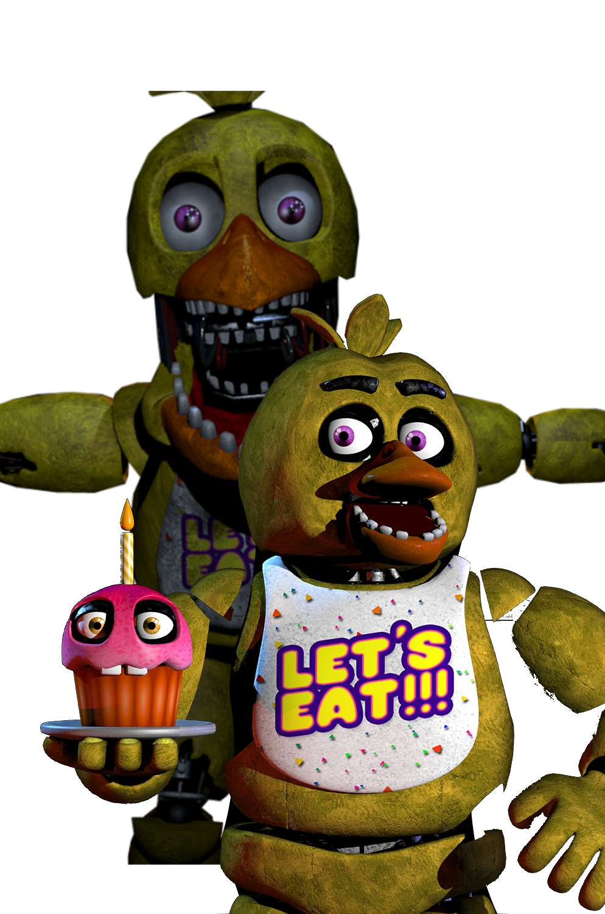

Chica, l’animatronique poule, fait partie des mascottes emblématiques de la série, mais elle cache également une histoire sombre et tragique. Comme Freddy, elle possède une âme d’enfant nommée Susie. Elle est l’une des victimes des actes de William Afton. Susie est piégée dans son corps de métal et incarne la douleur et la confusion d’un enfant qui ne comprend pas ce qui lui arrive.
Chica semble être une des plus vengeresses des animatroniques, son comportement agressif et son attitude menaçante reflétant sans doute la souffrance de l'âme qui habite son corps.
Comme Freddy et les autres, elle possède une théorie notamment sur son cri ressemblant beaucoup à celui d’un enfant terrorisé de peur, une théorie reliée au fait que Susie aurait été tuée en criant, en voyant ses amis mourir. Cependant, une citation officielle nous dit qu'elle serait la première à être tuée et non la deuxième selon les fans.
Son design, bien qu'inhabituellement jovial, cache une profondeur tragique. Elle est souvent vue errant dans les ombres, toujours en quête de son agresseur et des réponses à ses tourments.
En tant qu'âme piégée, Chica incarne la vengeance et la colère des enfants qui cherchent à se libérer de l'emprise de William Afton, tout en cherchant à comprendre pourquoi leur innocence a été détruite.
Le fidèle compagnons de Chica, le Cupcake, possède également une âme. Cette âme n’est autre que le chien de Susie.
Toy Chica est l’une des animatroniques de la générations des Toys. Elle apparaît pour la première fois dans FNAF 2. Elle a été créée avec une fonctionnalité permettant de protéger les clients et employés. Cependant, la nuit, comme ses pairs, elle devient dangereux...
Elle possède la particularité suivante, elle est la seule animatronique à inverser la couleur de ses yeux et à enlever son bec pour laisser apparaitre une bouche horrifique.
Elle ne possède aussi aucune histoire d'âme, la possédant mais il n’y a qu'une raison pour expliquer son comportement la nuit. Dans le lore du jeu, quelqu’un s’est introduit dans la pizzeria pour trafiquer le système de reconnaissance faciale des Toys, ce qui a engendré leur destruction plus tard.


Phathom Chica apparaît pour la première fois dans FNAF 3. Elle est la manifestation de Chica (Chica de FNAF 1) en tant qu'hallucination. Cependant, dans cette manifestation le Cupcake n’est pas présent.
Elle est totalement brûlée mais elle est le phantom dans le meilleur état.
Phantom Chica apparaît dans sur une borne d’arcade dans un couloir. Cela pourrait être relié aux conditions dans lesquelles Susie (l’enfant qui hante Chica) a été tuée car avant d’être de suivre un homme dans un costume de lapin (William Afton) elle était en train de jouer sur une borne d’arcade.
Nightmare Chica est une version cauchemardesque de Chica et elle fait sa première apparition dans FNAF 4.
Son apparence est plutôt effrayante notamment à cause de son costume abîmée, des griffes et ces 3 rangé de dents acérées et ensanglantées.
Elle possède une corpulence légèrement plus imposante que Chica.
Dans cette version, le Cupcake est également présent dans une version tout aussi cauchemardesque que son amie Chica.
Elle fonctionne en parallèle de Nightmare Bonnie en s’approchant du côté droit de la chambre (sur les portes).

Jack-O-Chica est une autre version d'Halloween des animatroniques dans Five Nights at Freddy's 4. Elle est similaire à Chica, mais avec un corps enflammé et une apparence plus terrifiante, avec des yeux jaunes luisants et des flammes qui s'échappent d'elle.
Son design est inspiré par le thème d'Halloween, avec un aspect effrayant qui rappelle les citrouilles enflammées et les monstres d'une nuit d'horreur. Comme Jack-O-Bonnie, elle est un ajout spécial à l'univers FNAF et offre une expérience de jeu plus intense lors des événements spéciaux.
Funtime Chica est une version modifiée et plus élégante de Chica, apparue dans Freddy Fazbear's Pizzeria Simulator.
Elle est caractérisée par son design futuriste et coloré, avec des éléments brillants et des yeux lumineux.
Contrairement à son prédécesseur, Funtime Chica semble avoir un côté plus charmant et séduisant dans son apparence. Elle fait partie de la série des animatroniques "Funtime" mais ne sera jamais mentionnée dans le jeu Sister Location.


Rockstar Chica, qui apparaît dans Five Nights at Freddy's: Pizzeria Simulator, est une version relookée de Chica, mais avec un design plus joyeux et flashy. Elle porte un grand sourire et est équipée d'accessoires comme un bibelot scintillant et une apparence plus colorée.
Bien que sa posture et son apparence semblent accueillantes, Rockstar Chica peut être dangereuse, agissant parfois de manière imprévisible. Elle incarne bien le contraste entre le côté festif et l'angoisse sous-jacente de la série FNAF.
High Score Chica est un personnage introduit lors d'un événement spécial du jeu Five Nights at Freddy's: Security Breach. Elle ne fait pas partie des personnages principaux, mais elle incarne l'esprit des événements spéciaux qui viennent diversifier les apparences des animatroniques.
High Score Chica est une version modifiée de Chica, elle a un design axé sur les jeux vidéo rétro et l'esthétique d'arcade.


Liberty Chica est un personnage introduit dans un épisode spécial Five Nights at Freddy's: Security Breach. Liberty Chica n'est pas un personnage central dans l'intrigue principale.
Liberty Chica est une version modifiée de Chica. Elle a été créée spécialement pour un événement saisonnier en lien avec la fête de l'indépendance des États-Unis (le 4 juillet).
Ignited Chica est une version tordue et brisée de Chica, qui apparaît pour la première fois dans The Joy of Creation, un Fan Game. Tout comme Ignited Freddy, elle est en proie aux flammes et à la destruction.
Son apparence est marquée par des blessures et des déformations graves. Elle possède une silhouette plus sinistre, avec des détails de sa forme dévastée qui la rendent encore plus menaçante.

Glamrock Chica fait partie des Glamrocks et elle apparaît pour la première fois dans FNAF Security Breach.
Elle est la mascotte de Mazercise et la guitariste du groupe formé avec les autres Glamrock. Chica se mettra dans un mode inhabituel après le concert annulé et se mettra à rôder dans le Pizzaplex à la recherche du joueur (Gregory).
Elle a toutefois conservé la passion des pizzas, caractéristique de la Chica originale.